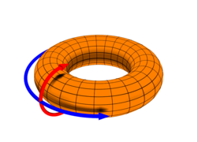
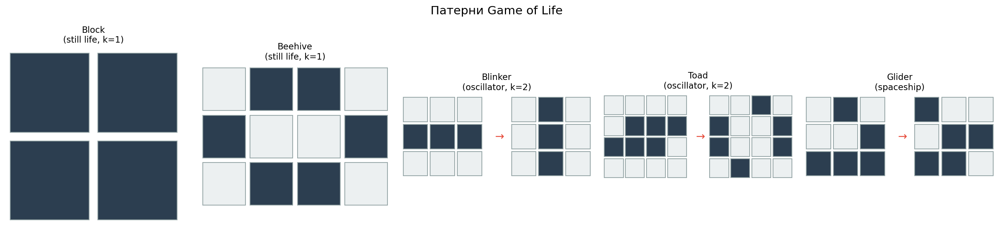
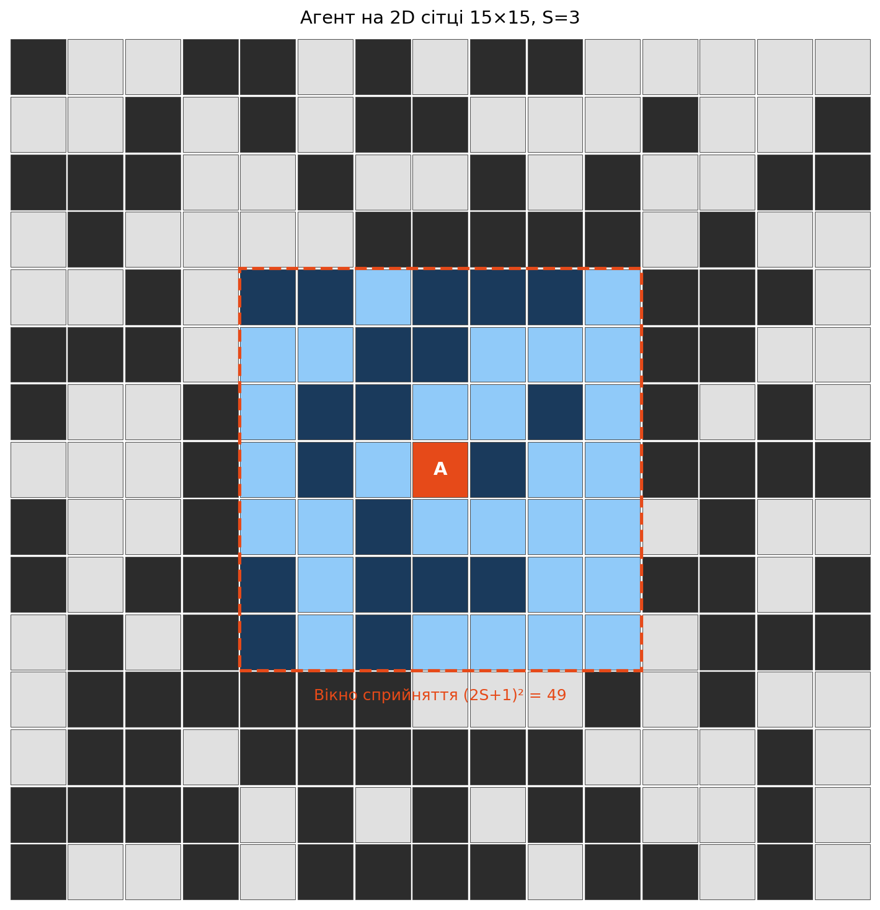
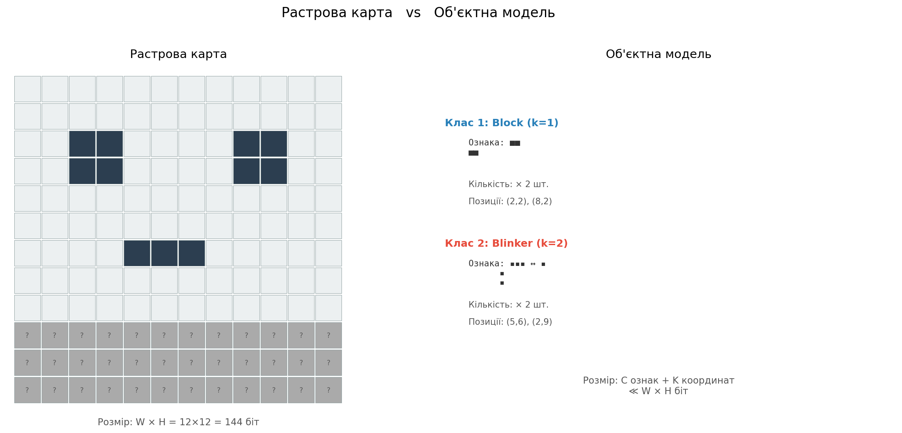
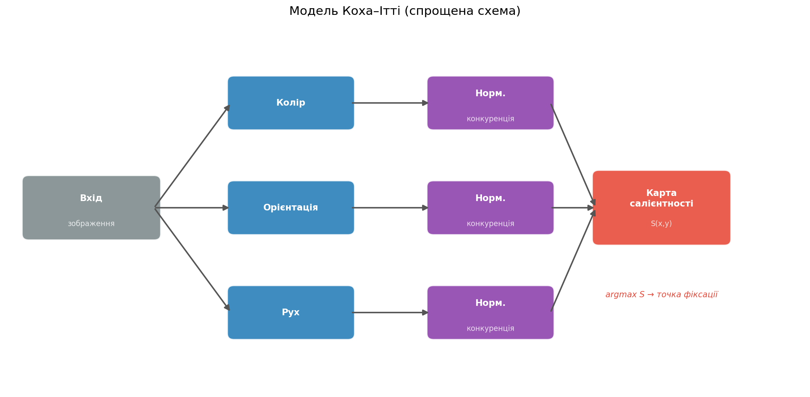
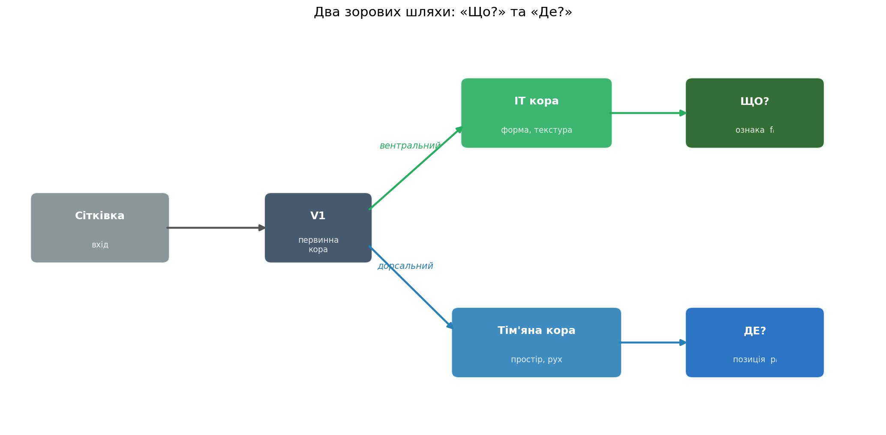

Лекція 4: 1D бінарне дискретне статичне середовище
Сьогодні: 2D бінарне дискретне динамічне середовище
| Лекція 4 (1D) | Лекція 5 (2D) | |
|---|---|---|
| Простір | Вектор \(\{0,1\}^N\) | Матриця \(\{0,1\}^{W \times H}\) |
| Динаміка | Статичне або правило 30 | Game of Life |
| Дії | \(\{-1, 0, +1\}\) | \(\{\uparrow, \downarrow, \leftarrow, \rightarrow, 0\}\) |
| Сприйняття | Вікно \(2S+1\) | Патч \((2S+1)^2\) |
| Складність | \(2^N\) | \(2^{W \times H}\) |
Бінарна матриця розміром \(W \times H\) бітів:
\[\mathcal{W}_t = \{w_{x,y}^{(t)}\}_{x \in [0,W), \; y \in [0,H)}, \quad w_{x,y} \in \{0, 1\}\]
Кількість станів: \(|S| = 2^{W \times H}\)
Час дискретний: \(t = 0, 1, 2, \dots\)
Середовище динамічне: \(\mathcal{W}_{t+1} \neq \mathcal{W}_t\) — стан змінюється за правилами клітинного автомата.
Note
При \(W = H = 50\): \(|S| = 2^{2500} \approx 10^{752}\) — більше, ніж атомів у Всесвіті (\(\approx 10^{80}\)).
Порівняйте: 1D середовище \(N=100\): \(2^{100} \approx 10^{30}\) — «лише» квінтільйон квінтільйонів.
1. Прямокутник з межами — чотири краї:
2. Тор (основний у практиці) — обидві осі замкнені:
\[w_{x,y} = w_{x \bmod W, \; y \bmod H}\]
Агент виходить за правий край → з’являється зліва; за нижній → зверху.
3. Циліндр — одна вісь замкнена, інша — з межами
4. Пляшка Клейна — одна вісь з перекрутом (2D аналог стрічки Мьобіуса)

| Середовище | Кількість станів | Порядок |
|---|---|---|
| 1D, \(N = 20\) | \(2^{20}\) | \(\approx 10^6\) |
| 1D, \(N = 100\) | \(2^{100}\) | \(\approx 10^{30}\) |
| 2D, \(10 \times 10\) | \(2^{100}\) | \(\approx 10^{30}\) |
| 2D, \(50 \times 50\) | \(2^{2500}\) | \(\approx 10^{752}\) |
| Go (\(19 \times 19\)) | \(\approx 3^{361}\) | \(\approx 10^{170}\) |
Навіть сприйняття агента має величезний простір.
При радіусі \(S = 9\) вікно \(19 \times 19 = 361\) клітина:
\[|O| = 2^{(2S+1)^2} = 2^{361} \approx 10^{108}\]
Але це лише \(\approx 14\%\) від світу \(50 \times 50\). Решта — невідома.
John Conway, 1970 — клітинний автомат на 2D сітці.
Стан клітини залежить від кількості живих сусідів \(n_{x,y}^{(t)}\) у 8-зв’язковому оточенні (околиця Мура):
\[n_{x,y}^{(t)} = \sum_{(i,j) \in \mathcal{N}(x,y)} w_{i,j}^{(t)}\]
Правила оновлення:
\[w_{x,y}^{(t+1)} = \begin{cases} 1, & \text{якщо } n_{x,y}^{(t)} = 3 & \text{(народження)} \\ w_{x,y}^{(t)}, & \text{якщо } n_{x,y}^{(t)} = 2 & \text{(виживання)} \\ 0, & \text{інакше} & \text{(смерть)} \end{cases}\]
Інтуїція:
Реалізація (NumPy, векторизовано):
Game of Life породжує складну динаміку з простих правил:
| Тип | Приклад | Період | Поведінка |
|---|---|---|---|
| Still life | Block (2×2), Beehive | \(k = 1\) | \(w^{(t+1)} = w^{(t)}\) — незмінний |
| Oscillator | Blinker, Toad | \(k > 1\) | \(w^{(t+k)} = w^{(t)}\) — циклічний |
| Spaceship | Glider, LWSS | \(k > 1\) | Цикл + зсув \((\Delta x, \Delta y)\) |
| Methuselah | R-pentomino | — | Довга нестабільна фаза |
| Chaos | Випадковий «суп» | — | Непередбачувана еволюція |

Note
Для агента: різні патерни → різні «об’єкти» у моделі світу. Це основа для об’єктно-центричного сприйняття.
Game of Life — Тюрінг-повний автомат: у ньому можна побудувати будь-який обчислювальний процес.
Це означає: неможливо в загальному випадку передбачити стан \(w_{x,y}^{(t+\Delta)}\) без покрокової симуляції всіх \(\Delta\) кроків.
Паралель з 1D клітинними автоматами (Лекція 4):
| Клас Вольфрама | Поведінка | 2D аналог (Game of Life) |
|---|---|---|
| I — однорідний | Всі клітини однакові | Порожній світ / повністю заповнений |
| II — стабільний | Циклічні / фіксовані | Still life, осцилятори |
| III — хаотичний | Псевдовипадковий | «Суп» на ранніх стадіях |
| IV — складний | Локальні структури, на межі хаосу | Game of Life у цілому |
Game of Life — каноноічний приклад класу IV: складні локальні структури, що виникають з простих правил. Ідеальне тестове середовище для агента.
Позиція:
\[\mathbf{r}_t = (x_t, y_t) \in [0, W) \times [0, H)\]
Дії — 4 кардинальні напрямки + стояти на місці:
\[a_t \in \{\uparrow, \downarrow, \leftarrow, \rightarrow, 0\}\]
Рух (тороїдальний):
\[x_{t+1} = (x_t + \Delta x) \bmod W\] \[y_{t+1} = (y_t + \Delta y) \bmod H\]
де \((\Delta x, \Delta y) \in \{(0,-1), (0,1), (-1,0), (1,0), (0,0)\}\).
Порівняння з 1D:
| 1D | 2D | |
|---|---|---|
| Позиція | \(r_t \in [0, N)\) | \((x_t, y_t) \in [0,W) \times [0,H)\) |
| Дії | \(\{-1, 0, +1\}\) | \(\{\uparrow, \downarrow, \leftarrow, \rightarrow, 0\}\) |
| \(|A|\) | 3 | 5 |
| Рух | \(r_{t+1} = (r_t + a_t) \bmod N\) | \(\mathbf{r}_{t+1} = (\mathbf{r}_t + \mathbf{a}_t) \bmod (W, H)\) |
Ключова відмінність: у 2D агент має \(4\) напрямки + стояти на місці, що дає більше свободи, але й складнішу навігацію.
Агент бачить квадратне вікно \((2S+1) \times (2S+1)\) навколо своєї позиції:
\[o_t = \{w_{(x_t + i) \bmod W, \; (y_t + j) \bmod H}^{(t)}\}_{i,j \in [-S, S]}\]
Характеристики:
Приклад: \(S = 9\), світ \(50 \times 50\):
\[\frac{(2 \cdot 9 + 1)^2}{50 \times 50} = \frac{361}{2500} \approx 14.4\%\]
Агент бачить лише \(\approx 1/7\) світу.

Note
Порівняно з 1D (вигляд \(2R+1\) із \(N\)), у 2D частка спостережуваної зони зменшується квадратично: \(\frac{(2S+1)^2}{W \cdot H}\).
Підхід 1: повна внутрішня копія середовища
\[\hat{W} \in \{0, 1, ?\}^{H \times W}\]
де \(?\) — «ще не спостережено» (невідомо).
Оновлення (кожен крок):
\[\hat{w}_{x,y}^{(t)} = \begin{cases} w_{x,y}^{(t)}, & (x,y) \in \text{вікно сприйняття} \\ \hat{w}_{x,y}^{(t-1)}, & \text{інакше (застаріле!)} \end{cases}\]
Розмір пам’яті:
\(|\mathcal{M}_{\text{raster}}| = 2 \cdot W \cdot H\) бітів (значення + маска _known)
Проблема 1. застарівання:
У динамічному середовищі карта точна лише в зоні поточного сприйняття. За межами вікна клітини продовжують еволюціонувати, але агент цього не знає.
З кожним кроком \(E = |\hat{W}_t - W_t|\) зростає для клітин поза сприйняттям. Проблема 2. пам’ять обмежена: Якщо \(W\) великий, і є обмеження на пам’ять, зберігати повну карту може бути неможливо.
Note
Аналогія: растрова карта — це «фотографічна пам’ять». Точна в момент спостереження, але швидко застаріває.
Підхід 2: описати світ як колекцію об’єктів
\[\mathcal{M}_t = \{(f_i, p_i)\}_{i=1}^{K}\]
де \(f_i\) — ознака (бінарний патерн або цикл), \(p_i\) — позиція (координати центроїда).
Для статичних об’єктів (\(k = 1\)): \(f_i\) — один бінарний кадр
Для осциляторів (\(k > 1\)): \(f_i = [f_i^{(0)}, f_i^{(1)}, \dots, f_i^{(k-1)}]\) — цикл із \(k\) кадрів
Перевага: стисне представлення:
\[K \ll W \cdot H\]
Замість \(2500\) бітів для \(50 \times 50\) — лише \(K\) описів об’єктів.

Аналогія з когнітивною наукою
Людина не запам’ятовує кожен піксель сцени — вона запам’ятовує об’єкти та їх розташування: «тут стіл, там книжка, там кухоль». Це семантична пам’ять.
Об’єкти з однаковими ознаками утворюють клас:
\[\mathcal{M}_t = \{(F_c, \{p_{c,1}, p_{c,2}, \dots, p_{c,n_c}\})\}_{c=1}^{C}\]
де \(F_c\) — ознака класу (зберігається один раз), а \(\{p_{c,j}\}\) — позиції всіх екземплярів.
Приклад: якщо у світі 15 блоків (2×2) — замість 15 патернів зберігаємо 1 патерн + 15 координат.
Алгоритм групування:
Виграш: при \(C \ll K\) — значне додаткове стиснення.
Типовий сценарій: у зрілому GoL-середовищі (\(\sim 1000\) кроків) переважають кілька типів small still life та blinker-подібні осцилятори → \(C\) невелике.
Відновити повну растрову карту з об’єктної моделі:
Алгоритм:
Мертві клітини (фон) — нулі за замовчуванням.
Похибка — нормалізована відстань Геммінга:
\[E_t = \frac{1}{W \cdot H} \sum_{x,y} |w_{x,y}^{(t)} - \hat{w}_{x,y}^{(t)}|\]
Джерела помилки:
Розмір пам’яті для трьох представлень:
| Модель | Формула розміру (біт) |
|---|---|
| Растрова карта | \(W \times H\) |
| Об’єктна (без групування) | \(\sum_{i=1}^{K} (s_i^2 \cdot k_i + 2\lceil\log_2 W\rceil)\) |
| Об’єктна (з групуванням) | \(\sum_{c=1}^{C} (s_c^2 \cdot k_c + n_c \cdot 2\lceil\log_2 W\rceil)\) |
де \(s_i\) — розмір кропу, \(k_i\) — період, \(n_c\) — кількість екземплярів класу \(c\).
Компроміс — поріг \(\theta\):
| \(\theta\) малий | \(\theta\) великий |
|---|---|
| Більше класів \(C\) | Менше класів \(C\) |
| Точніша реконструкція | Менший розмір моделі |
| Менше стиснення | Більша похибка \(E_t\) |
Note
Фундаментальний trade-off: ефективна модель світу — це модель, що стискає реальність до компактного опису, зберігаючи лише суттєве. Що вважати «суттєвим» — визначає поріг \(\theta\).
Об’єктна модель має унікальну перевагу: вона може передбачувати стан об’єктів поза зоною сприйняття.
Осцилятори (відомий період \(k\) та цикл):
\[\hat{f}_i^{(t)} = f_{i, \; t \bmod k}\]
При \(\Delta t = t - t_{\text{last\_seen}}\) кроків після спостереження:
Рухомі об’єкти (швидкість \(v_i = (\Delta x / k, \Delta y / k)\)):
\[\hat{p}_i^{(t)} = p_i^{(t_0)} + v_i \cdot (t - t_0)\]
Порівняння з растровою картою:
| Модель | \(E\) при \(\Delta t \to \infty\) |
|---|---|
| Растрова карта | \(E \to ?\) (невизначено) |
| Об’єктна без передбачення | \(E\) стабільна для still life |
| Об’єктна з передбаченням | \(E\) стабільна для всіх об’єктів з відомим циклом |
Людина не обробляє всю візуальну сцену одночасно — увага вибірково фокусується на найважливіших ділянках.
Модель Коха–Ітті (1998):
Ключова ідея: не потрібно розпізнавати об’єкти, щоб привернути увагу — достатньо контрасту відносно оточення.
Це bottom-up (висхідний) процес: від сигналу до уваги, без знань про зміст.

У нашому 2D бінарному середовищі реалізовано два типи салієнтності:
Motion saliency — що змінюється?
Експоненційне ковзне середнє (EMA) різниці між кадрами:
\[\text{EMA}_t = \alpha \cdot \text{EMA}_{t-1} + (1 - \alpha) \cdot |o_t - o_{t-1}|\]
де \(\alpha = 0.6\) — коефіцієнт згасання.
Висока для: осциляторів, рухомих об’єктів. Низька для: статичних об’єктів (still life), пустих зон.
Static saliency — де скупчення?
Гаусівський розмив живих клітин:
\[\text{Static}(x,y) = (o_t * G_\sigma)(x, y)\]
де \(G_\sigma\) — Гаусівське ядро з параметром \(\sigma\).
Висока для: скупчень живих клітин. Використовується для сегментації → блоби (об’єкти-кандидати).
Сегментація: бінаризація → зв’язні компоненти → блоби з атрибутами: centroid, area, bbox, motion_score.
Два шляхи зорової обробки (Ungerleider & Mishkin, 1982):
Вентральний шлях (“Що?”) — від V1 до IT-кори:
Дорсальний шлях (“Де?”) — від V1 до тім’яної кори:

Мозок будує об’єктну модель: кожен об’єкт = (ознака, позиція). Це і є основна ідея для нашого агента.
Завдання: розпізнавання патернів, оцінка схожості, кластеризація, сегментація, відстежування.
У Game of Life об’єкти мають природну класифікацію за динамікою:
Статичні (still life), період \(k = 1\):
\[f_i^{(t+1)} = f_i^{(t)}\]
Ознака — фіксований бінарний патерн.
Осцилятори, період \(k > 1\):
\[f_i^{(t)} = f_i^{(t+k)}\]
Ознака — цикл: впорядкована послідовність із \(k\) кадрів: \([f_i^{(0)}, f_i^{(1)}, \dots, f_i^{(k-1)}]\)
Рухомі об’єкти (spaceships): осцилятор + зсув за період:
\[p_i^{(t+k)} = p_i^{(t)} + (\Delta x_i, \Delta y_i)\]
Опис об’єкта (WorldObject):
| Поле | Зміст |
|---|---|
id |
Унікальний ідентифікатор |
centroid |
\((x, y)\) — позиція |
area |
Площа (кількість живих клітин) |
bbox |
Обмежувальна рамка |
motion_score |
Рухова салієнтність |
first_seen |
Крок першого спостереження |
last_seen |
Крок останнього спостереження |
history |
Темпоральна історія кадрів |
Підтримання ідентичності об’єктів між кадрами:
Алгоритм (кожен крок):
Дедублікація: перед створенням нового об’єкта — перевірка чи немає поблизу існуючого:
\[d_{\text{tor}}(p_{\text{new}}, p_{\text{old}}) < r_{\text{dedup}} \;\text{та}\; |S_{\text{new}} - S_{\text{old}}| \text{ мала}\]
Важливо: об’єкти ніколи не видаляються — навіть покинувши зону сприйняття, вони залишаються в пам’яті.
ObjectHistory зберігає буфер останніх бінарних кадрів об’єкта (центрований кроп):
Алгоритм _try_detect_period():
Для кожного кандидата-періоду \(k = 1, 2, 3, \dots\) :
MIN_CONFIRM = 3)period = k та cycle = [f_0, \dots, f_{k-1}]Приклад — blinker (період 2):
| Крок | Кадр | diff з кроком \(-2\) |
|---|---|---|
| \(t\) | ▯▮▯ | — |
| \(t+1\) | ▮▯▮ (повернутий) | — |
| \(t+2\) | ▯▮▯ | \(\leq \varepsilon\) ✓ |
| \(t+3\) | ▮▯▮ | \(\leq \varepsilon\) ✓ |
| \(t+4\) | ▯▮▯ | \(\leq \varepsilon\) ✓ → k=2 підтверджено |
Приклад — block (період 1):
| Крок | Кадр | diff з кроком \(-1\) |
|---|---|---|
| \(t\) | ▮▮ / ▮▮ | — |
| \(t+1\) | ▮▮ / ▮▮ | \(0 \leq \varepsilon\) ✓ |
| \(t+2\) | ▮▮ / ▮▮ | \(0 \leq \varepsilon\) ✓ |
| \(t+3\) | ▮▮ / ▮▮ | \(0 \leq \varepsilon\) ✓ → k=1 |
Для порівняння двох об’єктів з однаковим періодом \(k\):
Цикл A: \([a_0, a_1, \dots, a_{k-1}]\), Цикл B: \([b_0, b_1, \dots, b_{k-1}]\)
\[d(A, B) = \min_{\phi \in [0, k)} \sum_{j=0}^{k-1} \|a_j - b_{(j + \phi) \bmod k}\|_1\]
Зсуваємо одну послідовність відносно іншої і беремо мінімальну відстань Геммінга.
Чому інваріантність до фази?
Два блінкери, що почали осцилювати в різний момент, мають однакову ознаку — але їхні цикли зсунуті:
Мінімізація по \(\phi\) це усуває.
Правила порівняння:
Окрім растрової та об’єктної моделі, існують інші підходи:
Нейромережеві моделі:
Переваги: можуть вчитись з даних, узагальнювати
Недоліки: потрібно багато даних, непрозорі, обчислювально дорогі
Символьні / гібридні моделі:
У нашій практиці:
Растрова карта (базова) + об’єктна модель (це працює!) — жоден з цих підходів не вимагає навчання, що важливо для розуміння принципів.
1. Побудова карти — відвідати весь світ, заповнити маску _known:
\[R_t = \text{coverage}_t = \frac{|\{(x,y) : \hat{w}_{x,y} \neq ?\}|}{W \times H}\]
2. Реконструкція — точно відтворити поточний стан:
\[R_t = -E_t = -\frac{1}{WH}\sum_{x,y} |w_{x,y}^{(t)} - \hat{w}_{x,y}^{(t)}|\]
3. Пошук патерну — знайти об’єкт, найбільш подібний до зразка \(P\):
\[R_t = -\min_{i} d(P, f_i)\]
де \(d\) — відстань Геммінга (або косинусна) з ковзним вікном.
4. Дослідження (exploration) — зменшення невизначеності:
\[R_t = -H(\mathcal{W}_t | o_0, o_1, \dots, o_t)\]
У загальному випадку: \(\pi^* = \arg\max_\pi \mathbb{E}\left[\sum_{t=0}^{\infty} \gamma^t \cdot R_t\right]\)
Паттерн Стратегія: Policy → __call__(agent, model) → direction
GreedyExplorer
Один крок: рухатись туди, де найбільше невідомих клітин
for d in {↑,↓,←,→}:
score[d] = count_unknown(
perceive_at(pos + d))
return argmax(score)✅ Швидкий старт ❌ Може застрягти
NearestUnknown
Глобально: найкоротший шлях до найближчої невідомої клітини
Тороїдальна Манхеттенська відстань:
\[d_M = \min(\Delta x, W - \Delta x) + \min(\Delta y, H - \Delta y)\]
✅ Гарантовано покриває все ❌ Не «бачить» структуру
PatternSeek (двофазна)
Фаза A: дослідити → NearestUnknown
Фаза B: знайти → навігація до найкращого об’єкта за PatternMatcher
\[\text{target} = \arg\min_{i} d(P, f_i)\]
✅ Пошук конкретного патерну ❌ Потрібна повна карта для фази B
Кортеж \(\langle S, A, O, T, \Omega, R \rangle\):
| Символ | 2D бінарне дискретне |
|---|---|
| \(S\) | \(\{0,1\}^{W \times H} \times [0,W) \times [0,H)\) |
| \(A\) | \(\{\uparrow, \downarrow, \leftarrow, \rightarrow\}\) |
| \(O\) | \(\{0,1\}^{(2S+1)^2}\) |
| \(T\) | GoL + \((x,y) \to (x+\Delta x, y+\Delta y) \bmod (W,H)\) |
| \(\Omega\) | Тороїдальне вікно \((2S+1)^2\) |
| \(R\) | Залежить від цілі (coverage / reconstruction / pattern) |
Порівняння з 1D (Лекція 4):
| 1D | 2D | |
|---|---|---|
| \(|S|\) | \(2^N \cdot N\) | \(2^{WH} \cdot WH\) |
| \(|A|\) | \(3\) | \(4\) |
| \(|O|\) | \(2^{2R+1}\) | \(2^{(2S+1)^2}\) |
| \(T\) | Правило X або статичне | Game of Life |
| Часткова спостережуваність | Вікно \(2R+1\) | Патч \((2S+1)^2\) |
Мета агента:
\[\pi^* = \arg\max_\pi \mathbb{E}\left[\sum_{t=0}^{\infty} \gamma^t \cdot R(s_t, a_t)\right]\]